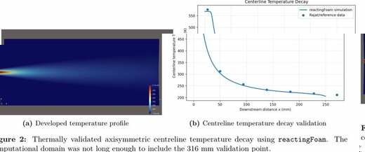

Summer 2026 · UTIAS
From validated mean jet mixing to fluctuation-resolved contrail physics
During Summer 2026, I held an undergraduate research position at the University of Toronto Institute for Aerospace Studies (UTIAS), working in the Propulsion and Energy Conversion Laboratory under Professor Swetaprovo Chaudhuri, with day-to-day mentorship from Dr. Rajat Sawanni. My work contributed to a Pratt & Whitney Canada-funded contrails project that also involved the UTIAS groups of Professors Gülder and Groth. My role was specifically on the CFD and turbulence-modelling side: developing, validating, and debugging an OpenFOAM framework for contrail-relevant exhaust mixing.
The central physics is driven by turbulent scalar mixing. Hot, water-vapour-rich exhaust entrains cold ambient air, reducing both temperature and vapour concentration. Saturation vapour pressure, however, decreases strongly and nonlinearly with temperature. Local turbulent fluctuations can therefore create pockets of supersaturation even while the mean plume is being diluted. That makes a good mean-flow solution necessary but insufficient: the eventual target is the joint instantaneous distribution of temperature and water vapour.
Why LES? RANS/URANS provide an efficient way to validate geometry, thermodynamics, species transport, and mean plume decay. But the statistical averaging suppresses the coherent shear-layer structures and scalar fluctuations that control the tails of the temperature–vapour distribution. LES spatially filters the governing equations and resolves much of the energetic three-dimensional turbulence directly.
Model hierarchy
Diagnosing geometry before increasing fidelity
I first built reduced-order compressible jet cases to establish a defensible thermal baseline before paying the computational cost of LES. A planar representation consistently overpredicted downstream centreline temperature, with mean errors exceeding roughly 40%. Changing the inlet turbulence parameters did not remove the discrepancy, which pointed to the entrainment physics of the planar geometry rather than a tunable turbulence constant.
Replacing the planar model with a five-degree axisymmetric wedge corrected the mean mixing behaviour. Using reactingFoam with chemistry disabled as a compressible multicomponent air–water-vapour solver, the final wedge case reproduced the reference centreline-temperature measurements with a 1.42% mean absolute percentage error and a 2.64% maximum error. This validated mean thermal field became the anchor for the later 3D RANS-to-LES workflow.

Water-vapour transport was also checked for bounded mass fractions, mixture consistency, and physically sensible plume spreading and decay. Those checks establish numerical consistency; they are not presented as independent experimental validation of the H₂O field.
Turbofan-relevant parameter study
Separating bypass cooling from vapour dilution
The validated axisymmetric framework was extended with an annular bypass stream to investigate how modern turbofan-like bypass conditions alter plume cooling and supersaturation. I ran a nine-case matrix: bypass ratios of approximately 2.50, 5.95, and 10.0, each at bypass temperatures of 240, 270, and 300 K.
The study exposed a clear engineering trade-off. Increasing bypass ratio increases mixing and cools the core plume more rapidly, which lowers the ice-saturation vapour pressure, but it also dilutes core-derived water vapour more aggressively. Over the developing region studied here, the cooling effect dominated the centreline supersaturation response. At BPR ≈ 10, reducing bypass temperature from 300 K to 240 K shifted the first location with Si > 1 from 0.1600 m to 0.1123 m — approximately 47.7 mm upstream.
| Tb (K) | BPR ≈ 2.50 | BPR ≈ 5.95 | BPR ≈ 10.0 |
|---|---|---|---|
| 240 | 0.1343 m | 0.1265 m | 0.1123 m |
| 270 | 0.1530 m | 0.1460 m | 0.1353 m |
| 300 | 0.1715 m | 0.1683 m | 0.1600 m |
Table 10 from the summer report, recreated directly in HTML. The absolute supersaturation values remain dependent on the present dry-ambient assumption, so the study is interpreted primarily through relative trends.
RANS-informed mesh design
Putting LES resolution where the turbulence demanded it
The validated solution was then carried into a full three-dimensional cylindrical domain with a structured O-grid. Rather than refining the entire tunnel uniformly, I used the developed SST-RANS field to identify where the local turbulence scales required LES resolution. The mesh-design metric combined the RANS integral turbulence length scale with the local finite-volume cell size:
The low-fres region collapsed into two thin bands around the expanding core–ambient shear layer, exactly where turbulent production, entrainment, and scalar gradients were strongest. I therefore built streamwise-varying radial interfaces into the structured mesh so that the refined bands widened with the developing plume. The refinement is geometric and fixed in time; it is not adaptive mesh refinement.
After repeated mesh-quality checks and redesign, the production mesh contained exactly 14,272,512 cells, with 128 azimuthal divisions and 808 axial cells. Near the inlet and early shear layer, the design targeted roughly 62.5–100 μm cell scales through the first 40 mm before relaxing resolution smoothly downstream. A final RANS solution was developed directly on this same production mesh before the LES switch, eliminating mesh-to-mesh interpolation of the developed mean plume.
Resolution criterion, not a validation claim: fres = 5 was used as a practical mesh-design target. It is not proof that a prescribed fraction of turbulent kinetic energy is resolved; spectral and SGS-energy diagnostics are still required to assess LES adequacy.
Production and diagnostic cases ran on the SciNet Trillium cluster using 192 MPI ranks across three nodes with OpenMPI/Slurm parallelization and adaptive timestepping limited to a maximum Courant number of 0.3.
Numerical diagnosis
Tracing a travelling velocity–pressure runaway
The hardest part of the summer was not simply obtaining a converged run; it was isolating why the pressure-based LES formulation failed. Both reactingFoam and pure-air rhoPimpleFoam developed a travelling velocity–pressure runaway when velocity shear and thermal/density shear were present together. The disturbance propagated downstream, drove local velocity upward and pressure downward, and eventually collapsed the timestep.
I treated this as a controlled debugging problem rather than repeatedly tuning one case. I tested mesh revisions, inlet smoothing and regularization, fresh starts and developed-RANS restarts, convection schemes ranging from higher-order to limited and full-upwind treatment, filter-width definitions, and three LES subgrid closures: WALE, Smagorinsky, and dynamicKEqn. These changes altered the onset and growth rate, but none removed the same qualitative pressure-based failure.
Thermal/density shear only — stable to 0.1 ms
SST RANS with both gradients — stable to 35 ms
cubeRootVol · maxDeltaxyz
dynamicKEqn delayed collapse to ≈0.303 ms but did not cure it
The controls substantially weakened species transport, thermophysical data, boundary-condition type, a single SGS closure, and one defective cell as complete explanations. I also extracted the local failure region and compared it against mesh-quality diagnostics: the runaway cluster had zero overlap with the 36,736 determinant-flagged cells, while local non-orthogonality and skewness remained modest. That evidence shifted the diagnosis away from generic mesh quality and toward the pressure–density–energy coupling of the compressible pressure-based LES.
Density-based continuation
Changing solver architecture while preserving the developed flow
The next experiment changed the compressible solver architecture while keeping the final mesh, developed RANS initial condition, hot-core/cold-ambient state, and dynamicKEqn closure. I moved to rhoCentralFoam, which advances the compressible flow using a Kurganov central-upwind flux rather than the pressure-based coupling used in the failed LES cases. The tested baseline used van-Leer reconstruction of density, velocity, and temperature with a pure-air JANAF/Sutherland thermophysical model and sensible internal energy.
This produced the first 3D LES route that remained bounded with the combined velocity and thermal/density gradients present: the pure-air baseline successively completed 0.2 ms, 0.5 ms, and 3 ms after the RANS-to-LES switch without the previous runaway. Pressure remained bounded, temperature did not collapse to the numerical floor, and the timestep no longer cascaded toward zero.
The passive-H₂O continuation reached the documented state at approximately t = 0.04035 s, about 4.35 ms after the RANS-to-LES switch. Short A/B comparisons showed nearly identical flow extrema with and without the passive scalar, consistent with the intended one-way coupling.
Contrail-relevant post-processing
Moving from a stable flow field to the statistics that matter
The LES is a means to reconstruct the instantaneous thermodynamic state experienced by the turbulent plume. From each cell's temperature, H₂O mass fraction, and absolute pressure, the post-processing converts mass fraction to mole fraction, determines water-vapour partial pressure, and evaluates saturation ratios over ice and liquid water.
The planned statistical analysis extends beyond a single contour: instantaneous and mean Si, centreline and radial profiles, fluctuation variance, probability-density functions, temporal spectra, and joint temperature–water-vapour PDFs. Those joint distributions are the reason LES is required: localized tails of the turbulent scalar field can cross the supersaturation threshold even when a Reynolds-averaged state does not.
Current physical scope: this framework diagnoses thermodynamic supersaturation. It does not yet include explicit soot activation, ice-particle populations, latent heat, or vapour depletion through condensation and deposition.
What the summer established
A validated baseline, a purpose-designed LES mesh, and a defensible solver route
The project progressed from a geometry-induced validation failure to a 1.42% mean thermal error, then used that validated baseline to quantify bypass-flow effects, construct and validate a 3D cylindrical framework, design a 14.27-million-cell RANS-informed LES mesh, and systematically isolate the failure mechanism of the original pressure-based LES approach.
The most important outcome was methodological rather than simply producing a colourful CFD field. The debugging campaign showed that the instability persisted across different SGS closures, convection schemes, mesh revisions, inlet treatments, restarts, and two pressure-based compressible solvers, while carefully chosen control cases remained stable. That evidence motivated the density-based rhoCentralFoam route, which remained bounded over the tested interval and enabled passive-H₂O transport to be restored for contrail-relevant thermodynamic analysis.
The next engineering step is to extend the bounded LES into a demonstrably developed sampling interval, then assess mesh adequacy and turbulence quality using resolved fluctuations, temporal spectra, SGS-energy behaviour, and supersaturation statistics. Stability is a prerequisite; it is not itself LES validation.
Technical figures shown on this page are extracted directly from the summer research report. The instantaneous LES fields retain the same interim status as in that report.